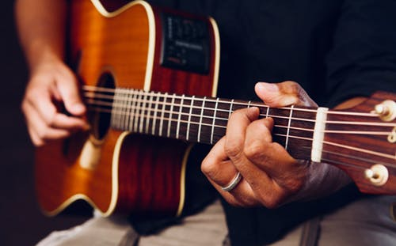
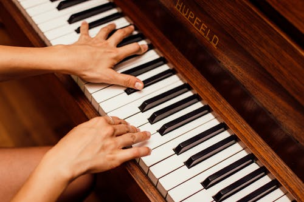
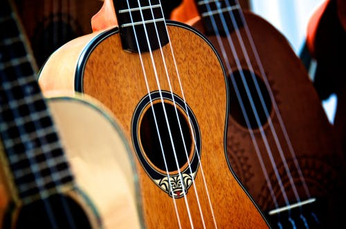

Hampton School of Music
Developing Your Creativity
We offer lessons that are guided by your creative ambitions. While focusing on your unique goals, we will explore the skills neccessary to become a rounded musician - all while having a great time!
Our Studio
Our studio is located in the village of Hampton, Ontario, just north of Taunton Rd. and east of Oshawa. We have been providing quality lessons throughout the province for over a decade, and are excited to bring our passion to such a beautiful community. With 6 instructors, and over 200 students, we are confident that we can help you to reach your musical goals! Please contact us for additional information, or to book a consultation.
Lessons Offered
Guitar
Our most popular choice, picking up the guitar allows you to learn your favourite songs right away! After developing a solid foundation of technique and musicianship, your lessons explore any genre/style of your choosing.
Piano
From the very first piano lesson, students will be playing pieces they enjoy. As students progress, they can learn easy Christmas carols, 5-finger editions of most Disney songs such as from “The Lion King.”
Percussion

Take lessons on drum kit to play your favourite pop and jazz tunes, develop fundamental rhythm skills with African hand percussion, or work on orchestral instruments, including snare, marimba, and glockenspiel.
Ukulele
The ukulele makes an excellent instrument for beginners and many find it easy to learn. Due to its manageable size, it’s a great choice among instruments for small children. It's a great instrument for accompanying your voice too.
Meet Our Instructors
Scott Alton(Guitar, Piano, Bass, Ukulele)
Scott completed his Bachelor of Music at Wilfrid Laurier University in Waterloo, Ontario, where he took private lessons with celebrated lutenist/guitarist Terry McKenna; participated in Laurier's Chamber Music Program; and performed regularly with the WLU Jazz Ensemble. Scott has also taken exams through the Royal Conservatory of Music for Classical Guitar, Piano, and Theory. Academically, he is interested in the field of ethnomusicology as it relates to 'guitar-like' instruments that are found in cultures throughout the world. As a teacher, Scott strongly believes in allowing each student to guide the direction of lessons based on their musical ambitions and what best motivates their learning, but also believes in investing necessary time towards developing proper technique.
Shannon Doyle(Drums, Orchestral Percussion, Piano, Orff/KinderMusic)
Shannon Pelletier-Doyle holds a Bachelor’s degree in music and a Bachelor of Education. Shannon has been teaching since 2007 and is currently working for the DDSB. She has a background in Childhood Education as well as Orff training. Shannon teaches drums and piano. Shannon Pelletier-Doyle holds a Bachelor’s degree in music and a Bachelor of Education. Shannon has been teaching since 2007 and is currently working for the DDSB. She has a background in Childhood Education as well as Orff training. Shannon teaches drums and piano.
Christian Hernandes(Guitar, Bass, Recording Technology)
Christian has studied music from a very young age. He holds RCM certifications for both violin and piano. He is a busy performer, recording session player, and a passionate teacher who loves sharing music with his students. Christian holds a Bachelor’s degree in music and a Bachelor of Education. Shannon has been teaching since 2007 and is currently working for the DDSB. She has a background in Childhood Education as well as Orff training. Shannon teaches drums and piano.